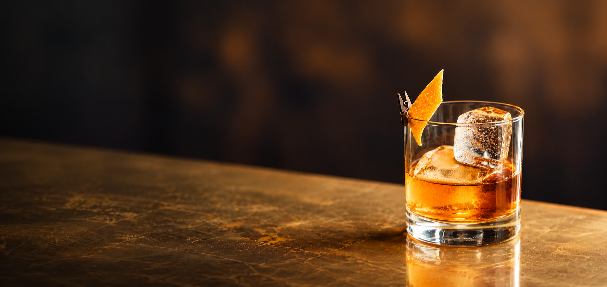
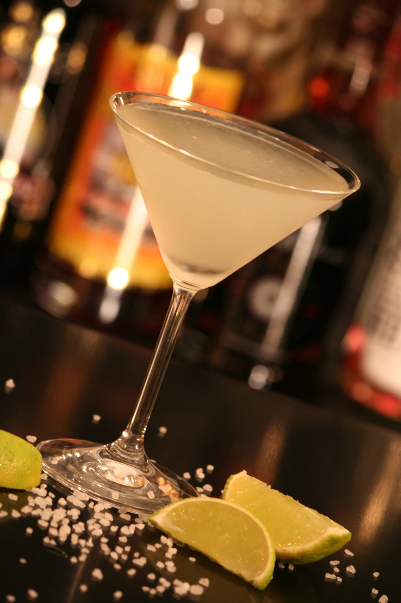
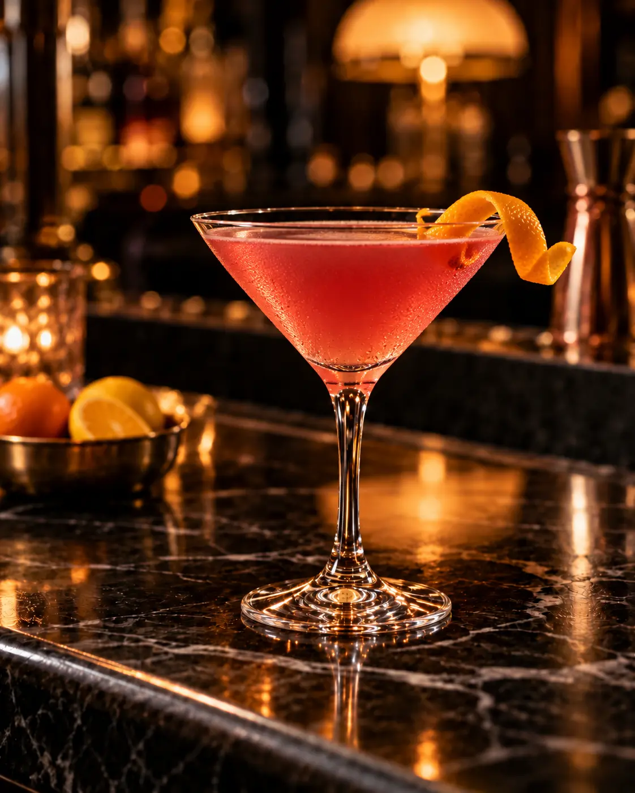
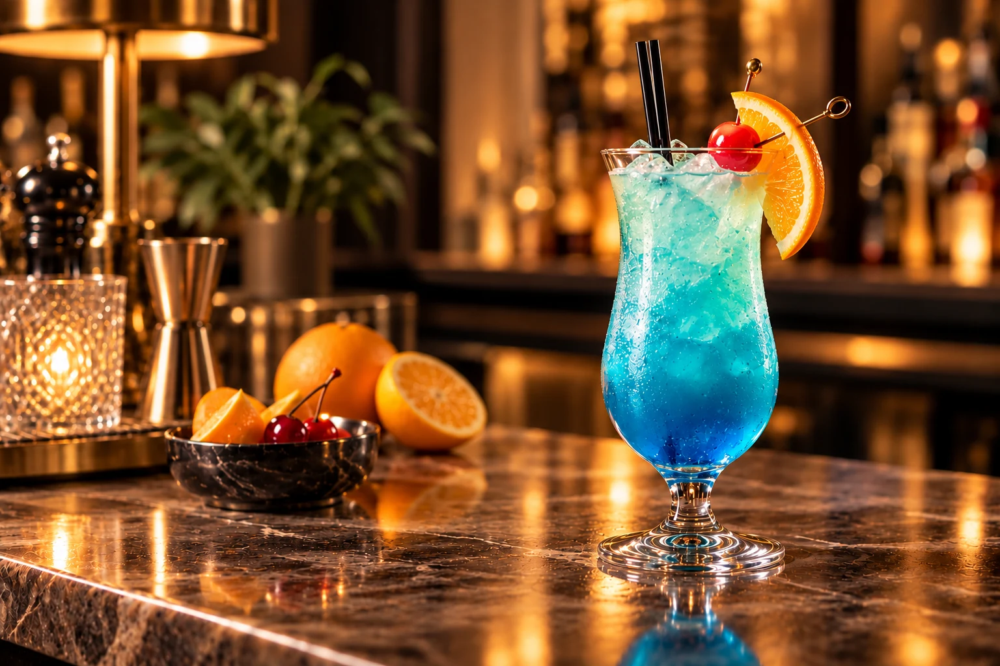
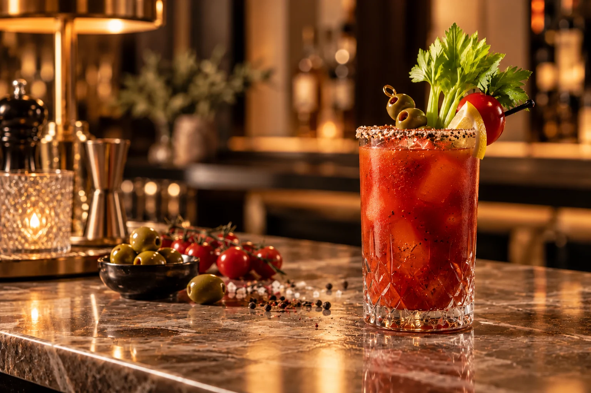
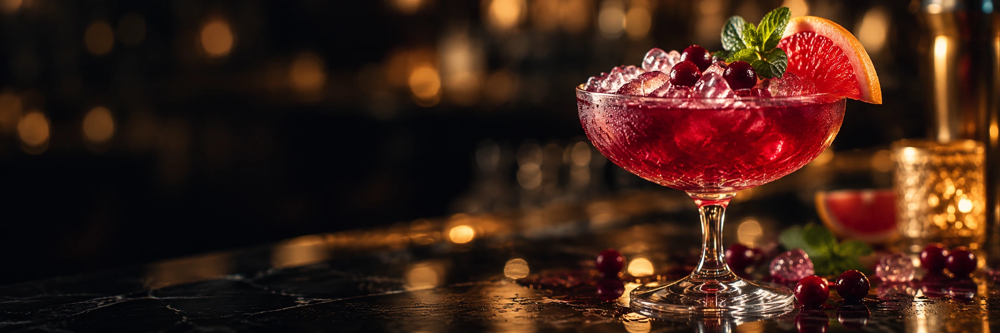

Не удалось загрузить фотографии. Проверьте подключение или перейдите к рецептам →
NEGRONI 1 : 1 : 1Видео не загрузилось — показана заставка.Классика.
01 / ОТ ИНГРЕДИЕНТОВ К РЕЦЕПТУ
Классика.
По шагам.
- 01
Начните с основы
Наполните низкий бокал крупным льдом. Он охладит напиток и будет таять медленнее, чем мелкая ледяная крошка.
- 02
Три равные части
Добавьте 30 мл джина, 30 мл сладкого красного вермута и 30 мл Campari. Перемешивайте барной ложкой около 20 секунд.
- 03
Последний штрих
Выжмите масла апельсиновой цедры над бокалом и добавьте её в напиток. Полный рецепт можно сохранить в избранное или добавить в план вечеринки.
02 / РЕЦЕПТЫ, К КОТОРЫМ ВОЗВРАЩАЮТСЯ
Начните с классики.
 5 мин · Смешивание
5 мин · СмешиваниеДжин / Горький
Negroni
Насыщенная итальянская классика: джин, красный вермут и горький аперитив в равных пропорциях.
- Джин30 мл
- Красный сладкий вермут30 мл
- Кампари30 мл

7 мин · ШейкерТекила / Кисло-сладкий
Margarita
Свежий лайм, текила и апельсиновый ликёр — яркое сочетание с солёным краем бокала.
- Текила50 мл
- Апельсиновый ликёр25 мл
- Сок лайма25 мл

7 мин · ШейкерВодка / Кисло-сладкий
Cosmopolitan
Лаконичный коктейль с клюквой, цитрусовой свежестью и тонким апельсиновым ароматом.
- Водка40 мл
- Апельсиновый ликёр15 мл
- Клюквенный сок30 мл
- Сок лайма15 мл
 7 мин · Сборка в бокале
7 мин · Сборка в бокалеРом / Освежающий
Mojito
Свежая мята, лайм и белый ром. Летнее настроение в высоком бокале.
- Белый ром50 мл
- Сок лайма25 мл
- Сахарный сироп15 мл
- Газированная вода60 мл
- Мята2 г

5 мин · Сборка в бокалеВодка / Цитрусовый
Blue Lagoon
Яркий голубой коктейль с цитрусовым вкусом, прохладной газировкой и выразительной апельсиновой нотой.
- Водка40 мл
- Ликёр Blue Curaçao20 мл
- Лимонная газировка100 мл
- Лимонный сок10 мл

6 мин · Сборка в бокалеВодка / Пряный
Bloody Mary
Пряная классика с томатным соком, лимоном и пикантными соусами — насыщенный вкус с мягкой крепостью.
- Водка45 мл
- Томатный сок90 мл
- Лимонный сок15 мл
- Вустерширский соус5 мл
- Острый соус2 мл
Тяните карточки мышью или пальцем
Видео не загрузилось — показан статичный кадр.
04 / НЕ ТОЛЬКО РЕЦЕПТЫ
У каждого вкуса
своя история.
Лёд падает в бокал, пока вы открываете характер напитков.
ТРАВЫ И ПРЯНОСТИ
Вся энциклопедия Джин
Можжевельник, ботаникалы и разница между основными стилями.
Читать САХАРНЫЙ ТРОСТНИКРом
Сырьё, выдержка и характер напитка, на котором строится мохито.
Читать ГОЛУБАЯ АГАВАТекила
Как производят текилу и чем отличаются её основные категории.
Читать ТИХИЕ И ИГРИСТЫЕВино
Стили, характеристики и примеры производителей.
Читать06 / ОТ ИДЕИ К ХОРОШЕМУ ВЕЧЕРУ
Ваш домашний бар.
Инструменты работают без регистрации.
Планы и избранное сохраняются на устройстве.
01
Что есть дома?
Укажите ингредиенты и количество. Посмотрите, что можно приготовить прямо сейчас.
Открыть 02Попасть во вкус
Выберите основу, вкус и тип напитка — получите подходящие рецепты.
Открыть 03Сравнить рецепты
Сопоставьте ингредиенты, сложность, время и расчётную крепость.
Открыть 04Собрать вечеринку
Добавьте коктейли и порции. Общие ингредиенты сложатся в список покупок.
Открыть 05Создать своё
Соберите собственное сочетание с расчётом объёма и крепости.
Открыть 06Сохранить любимое
Возвращайтесь к избранным рецептам. Ваш выбор хранится на этом устройстве.
Открыть
ХОРОШИЙ ВКУС НАЧИНАЕТСЯ С ЛЮБОПЫТСТВА
Какой рецепт
будет вашим?
Фотографии коктейлей и обработка фона. Авторы, исходники и лицензии .